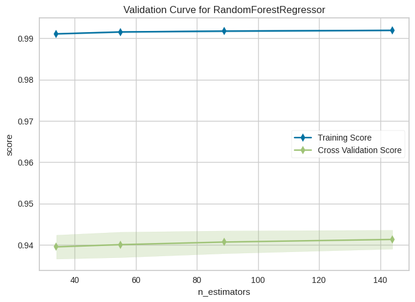
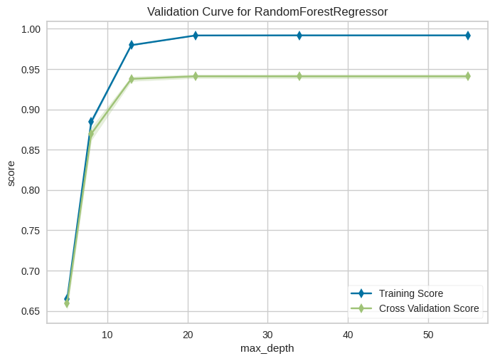
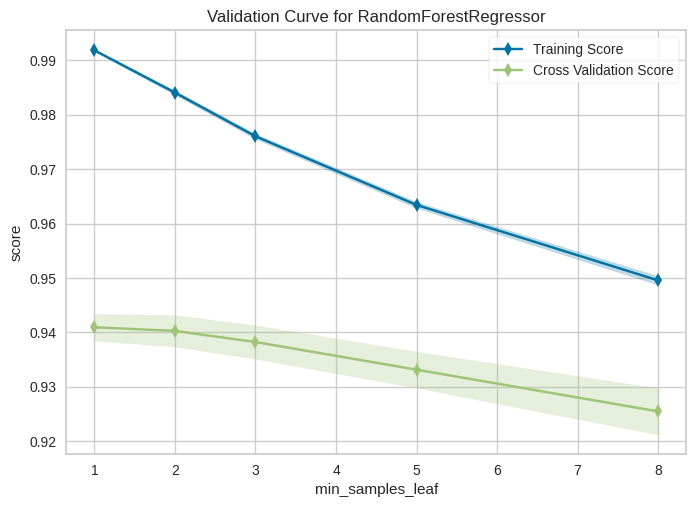
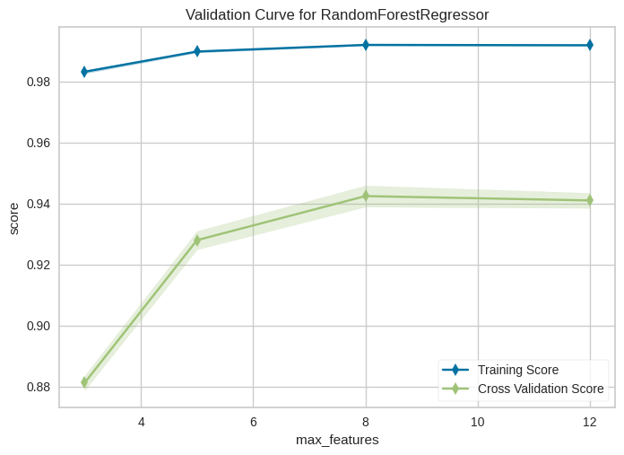

Solution: Optimiser les hyperparamètres avec GridSearchCV#
Utiliser GridSearchCV pour optimiser les hyperparamètres d’un modèle
import numpy as np
import matplotlib.pyplot as plt
import pandas as pd
from sklearn.ensemble import RandomForestRegressor
from sklearn.model_selection import train_test_split
from yellowbrick.model_selection import LearningCurve
from yellowbrick.model_selection import ValidationCurve
from sklearn.model_selection import GridSearchCV
bikeshare = pd.read_csv("../../data/bikeshare.csv")
bikeshare.head()
| season | year | month | hour | holiday | weekday | workingday | weather | temp | feelslike | humidity | windspeed | riders | |
|---|---|---|---|---|---|---|---|---|---|---|---|---|---|
| 0 | 1 | 0 | 1 | 0 | 0 | 6 | 0 | 1 | 0.24 | 0.2879 | 0.81 | 0.0 | 16 |
| 1 | 1 | 0 | 1 | 1 | 0 | 6 | 0 | 1 | 0.22 | 0.2727 | 0.80 | 0.0 | 40 |
| 2 | 1 | 0 | 1 | 2 | 0 | 6 | 0 | 1 | 0.22 | 0.2727 | 0.80 | 0.0 | 32 |
| 3 | 1 | 0 | 1 | 3 | 0 | 6 | 0 | 1 | 0.24 | 0.2879 | 0.75 | 0.0 | 13 |
| 4 | 1 | 0 | 1 | 4 | 0 | 6 | 0 | 1 | 0.24 | 0.2879 | 0.75 | 0.0 | 1 |
# On supprime la colonne label des données
X = bikeshare.drop("riders", axis=1)
# on récupère la colonne label dans une variable séparée
y = bikeshare["riders"]
# TODO: Extraire les données de train et de test
X_train, X_test, y_train, y_test = train_test_split(
X, y, test_size=0.25, random_state=2
)
Etudier l’effet individuel des hyperparamètres de l’algorithme choisi.#
On pourra exploiter les courbes de validation de yellowbrick
# TODO: Etude du paramètre n_estimators
viz = ValidationCurve(
RandomForestRegressor(n_jobs=-1), param_name="n_estimators",
param_range=[34, 55, 89, 144], cv=5, scoring="r2"
)
viz.fit(X_train, y_train)
viz.show();

n_estimators semble avoir peu d’effet. Nous allons garder la valeur par défaut pour l’instant
# TODO: Etude du paramètre max_depth
viz = ValidationCurve(
RandomForestRegressor(n_jobs=-1, random_state=2), param_name="max_depth",
param_range=[5, 8, 13, 21, 34, 55], cv=5, scoring="r2"
)
viz.fit(X_train, y_train)
viz.show();

Les valeurs au dessus de 13 atteignent un plateau. L’overfitting constaté ne s’acompagne pas d’une agravation de la variance. On gardera donc la valeur par défaut.
# TODO: Etude du paramètre min_samples_leaf
viz = ValidationCurve(
RandomForestRegressor(n_jobs=-1, random_state=2), param_name="min_samples_leaf",
param_range=[1, 2, 3, 5, 8], cv=5, scoring="r2"
)
viz.fit(X_train, y_train)
viz.show();

On serait tenté de ne garder que les valeurs en dessous de 3, mais la diminution de la variance (gap) incite à garder des valeurs supérieures (par exemple jusqu’à 5)
# TODO: Etude du paramètre max_features
viz = ValidationCurve(
RandomForestRegressor(n_jobs=-1, random_state=2), param_name="max_features",
param_range=[3, 5, 8, 12], cv=5, scoring="r2"
)
viz.fit(X_train, y_train)
viz.show();

On gardera les valeurs comprises entre 8 et 12
Utiliser GridSearchCV pour choisir les « meilleurs » hyperparamètres#
# TODO: Recherche d'un "optimum" grâce à GridSearchCV
# grid_search_reg = ...
param_grid = [
{
"max_features": [8, 9, 10, 12], "min_samples_leaf": [1, 2, 3, 5]
},
]
grid_search_reg = GridSearchCV(
RandomForestRegressor(n_jobs=-1, random_state=2), param_grid, cv=5, scoring="r2",
return_train_score=True
)
grid_search_reg.fit(X_train, y_train)
GridSearchCV(cv=5, estimator=RandomForestRegressor(n_jobs=-1, random_state=2),
param_grid=[{'max_features': [8, 9, 10, 12],
'min_samples_leaf': [1, 2, 3, 5]}],
return_train_score=True, scoring='r2')In a Jupyter environment, please rerun this cell to show the HTML representation or trust the notebook. On GitHub, the HTML representation is unable to render, please try loading this page with nbviewer.org.
GridSearchCV(cv=5, estimator=RandomForestRegressor(n_jobs=-1, random_state=2),
param_grid=[{'max_features': [8, 9, 10, 12],
'min_samples_leaf': [1, 2, 3, 5]}],
return_train_score=True, scoring='r2')RandomForestRegressor(n_jobs=-1, random_state=2)
RandomForestRegressor(n_jobs=-1, random_state=2)
# Exploitation du modèle obtenu sur les données ...
grid_search_reg.best_estimator_
RandomForestRegressor(max_features=9, n_jobs=-1, random_state=2)In a Jupyter environment, please rerun this cell to show the HTML representation or trust the notebook.
On GitHub, the HTML representation is unable to render, please try loading this page with nbviewer.org.
RandomForestRegressor(max_features=9, n_jobs=-1, random_state=2)
def get_sorted_cv_results(grid_search_reg):
cv_results = grid_search_reg.cv_results_
selected_cv_results = zip(
cv_results["params"],
cv_results["mean_test_score"],
cv_results["std_test_score"],
cv_results["mean_train_score"],
cv_results["std_train_score"]
)
def get_mean_test_score(cv_result):
return cv_result[1]
sorted_cv_results = sorted(selected_cv_results, key=get_mean_test_score, reverse=True)
return sorted_cv_results
# Afficher les résultats
def display_cv_results(grid_search_reg):
sorted_cv_results = get_sorted_cv_results(grid_search_reg)
for params, mean_test_score, std_test_score, mean_train_score, std_train_score in sorted_cv_results:
print(
params,
mean_test_score,
std_test_score,
mean_train_score,
std_train_score,
)
# TODO: afficher les resultats de GridSearchCV
display_cv_results(grid_search_reg)
{'max_features': 9, 'min_samples_leaf': 1} 0.943455544394347 0.00286939945890067 0.9920726709070887 0.00019176994642825583
{'max_features': 10, 'min_samples_leaf': 1} 0.9429977752799003 0.003184518496375536 0.9920529486521396 0.00013884884276564512
{'max_features': 8, 'min_samples_leaf': 1} 0.9423777694791721 0.003454688044686784 0.9919327778230654 0.00016507027990776926
{'max_features': 9, 'min_samples_leaf': 2} 0.942158354560083 0.0033902446981304494 0.983695480664354 0.00038011433114399566
{'max_features': 10, 'min_samples_leaf': 2} 0.9420504729162943 0.0034885421065645387 0.9840256572602504 0.000306534171516866
{'max_features': 12, 'min_samples_leaf': 1} 0.9409504706300951 0.0024394630783509505 0.9918195474552004 0.00016162707875180086
{'max_features': 8, 'min_samples_leaf': 2} 0.9406713336626007 0.0037862403821329045 0.9828520610534731 0.00035739591141785735
{'max_features': 12, 'min_samples_leaf': 2} 0.9402850746128717 0.0028619286976081793 0.9840521119530374 0.00037681725505983577
{'max_features': 10, 'min_samples_leaf': 3} 0.9401301226845625 0.0033816478827407947 0.9759972970430807 0.0005205201419649046
{'max_features': 9, 'min_samples_leaf': 3} 0.9395939154353137 0.0038076321537724475 0.9754916674094227 0.0004946776949759175
{'max_features': 8, 'min_samples_leaf': 3} 0.9382412658782016 0.003446054331181568 0.9744334443316592 0.00039655656027844154
{'max_features': 12, 'min_samples_leaf': 3} 0.9382376644951919 0.003062410744999187 0.976028793834999 0.00045112886141080767
{'max_features': 10, 'min_samples_leaf': 5} 0.9349834185157702 0.0036564606264463937 0.9634909061908564 0.0005815096481615106
{'max_features': 9, 'min_samples_leaf': 5} 0.9344365680131226 0.0037125257631999524 0.9627299549138879 0.00046655091958522035
{'max_features': 12, 'min_samples_leaf': 5} 0.9331615713297561 0.003297648970401896 0.9634225632882168 0.0005333879004577537
{'max_features': 8, 'min_samples_leaf': 5} 0.9320122618333786 0.002970813535113927 0.960664557525704 0.0008157553739001356
Discussion#
Etrudiez les résultats précédents.
A-t-on résolu avec
GridSearchCVles problèmes que pose l’optimisation des hyperparamètres ?